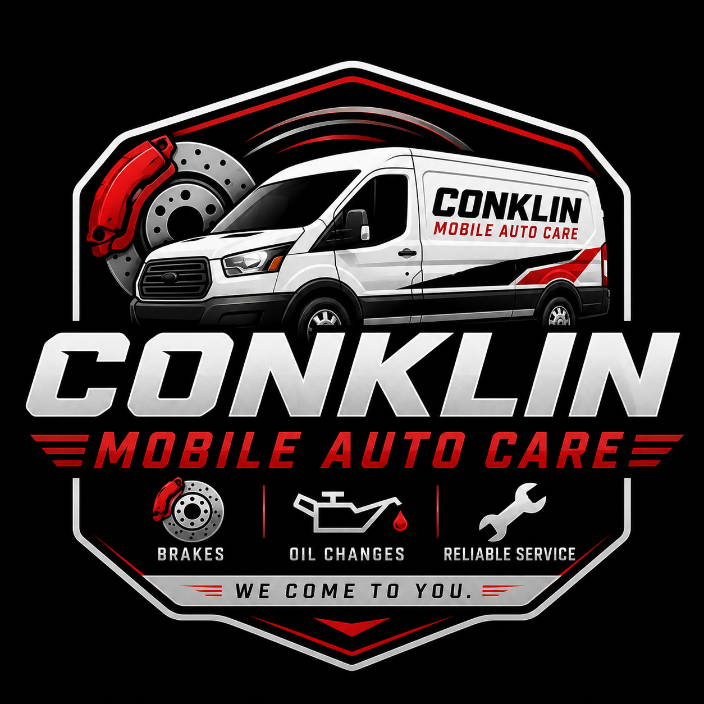

Conventional, blend, and full synthetic oil changes at your home or workplace.
Reliable brake service and replacement done wherever you are.
Fast battery replacement and installation service.
Improve airflow and interior air quality with quick filter replacements.
Stay safe in bad weather with fresh wiper blade installation.
Extend tire life and improve vehicle performance.
Basic scanner checks and code reading for warning lights and issues.
Conklin Mobile Auto Care brings professional vehicle maintenance directly to your home, workplace, or roadside location. No waiting rooms, no towing, and no wasting your day at a repair shop.
Honest pricing, dependable service, and convenient mobile auto care throughout Cumberland County.